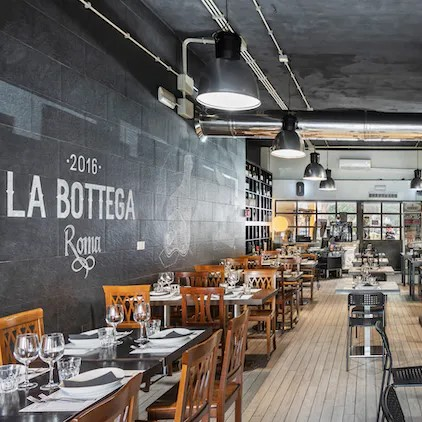
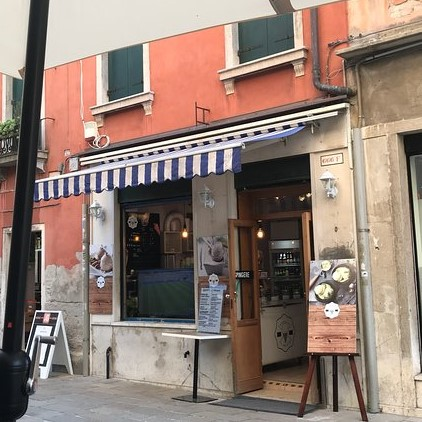
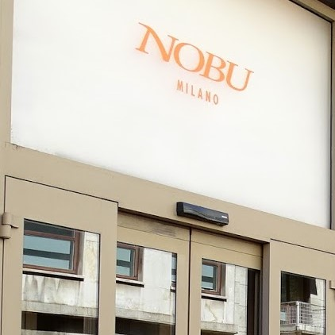
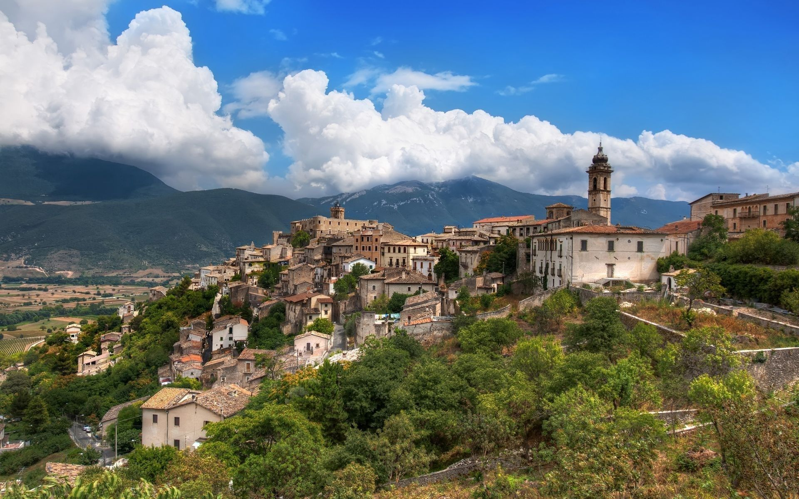
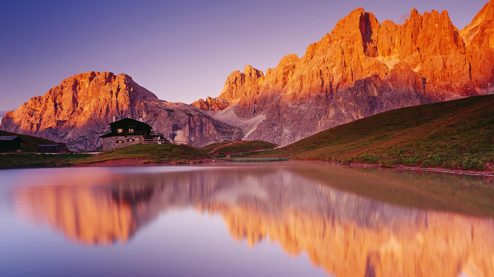
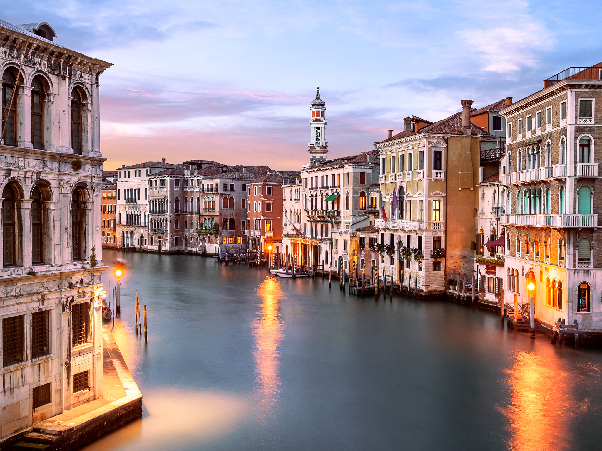
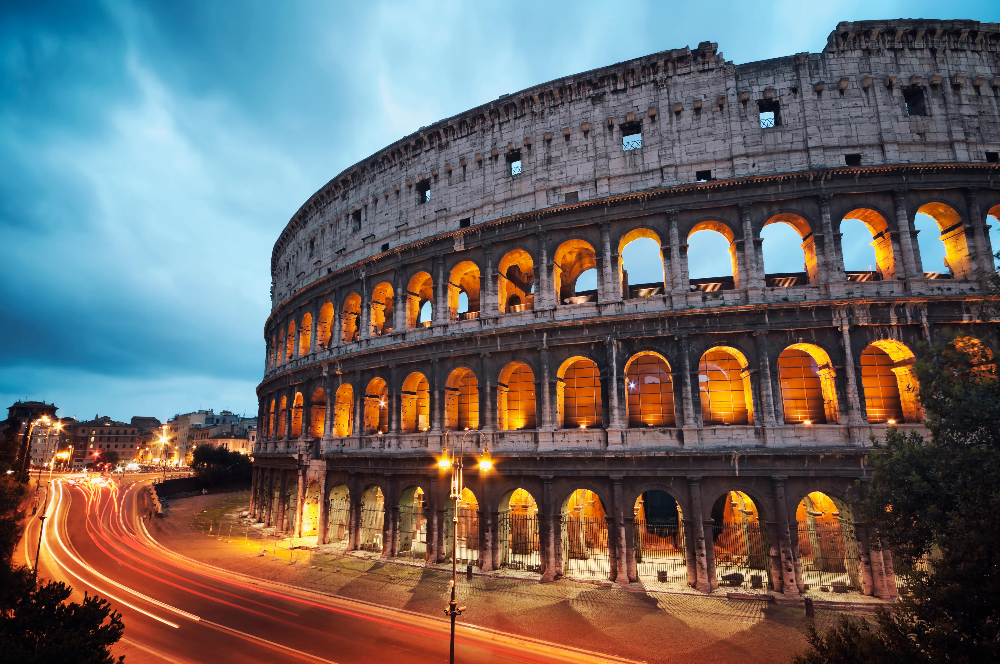
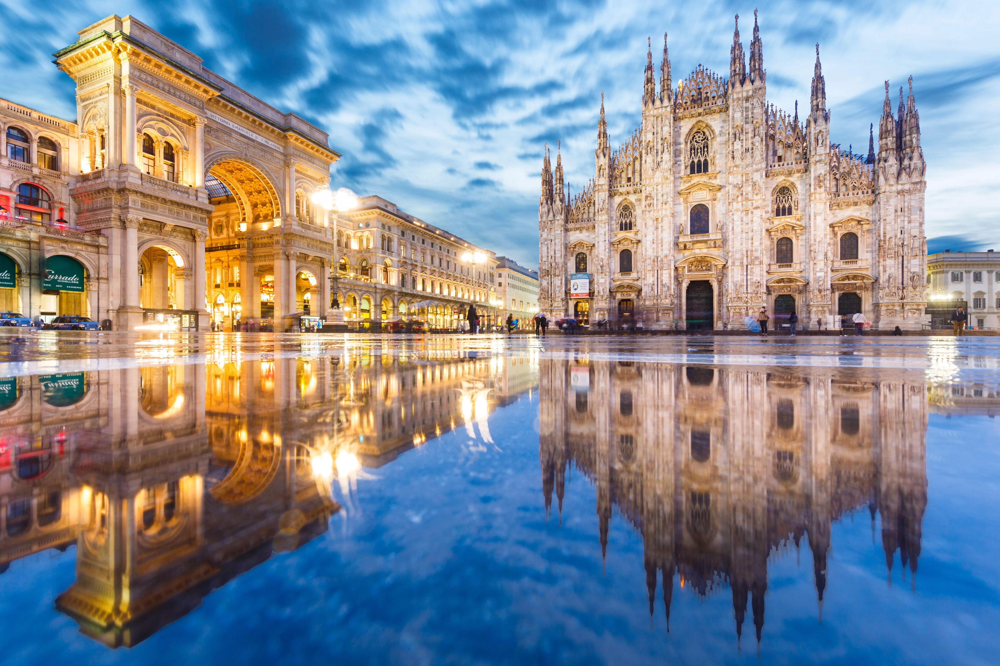
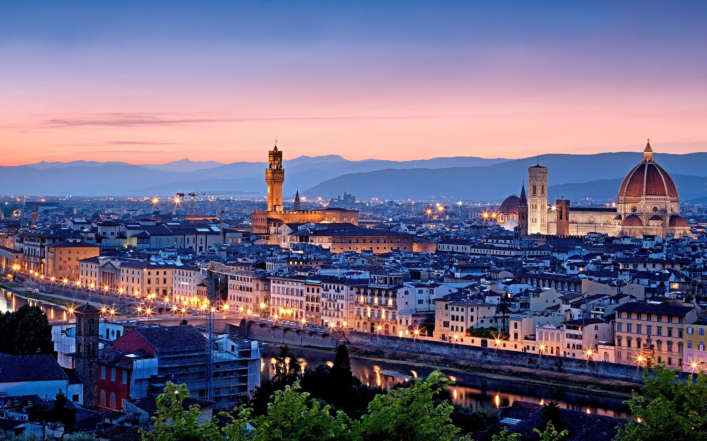

About Italy
Amazing buildings, views and art
Italy is known for amazing art, rich history, delicious food and iconic landmarks like the Colosseum and the Leaning Tower of Pisa. There are many beautiful cities located in Italy such as Rome, Venice and Milan. List of cities in Italy
Restaurants
Different restaurants in Italy

La Bottega
Tasty hot dishes and delicious deserts to choose from.
Address:
La Bottega Roma, Viale Battista Bardanzellu 27/29 Rome 00155

Punto G
A restraunt in Venice that serves gluten free foods.
Address:
Sestiere Santa Croce, 666D, 30135, Venezia

Nobu Milano
An amazing restaurant that serves sushi too!
Address:
Nobu Milano, Gastone Pisoni, 1, 20121 Milano MI, Italy
Gallery
Italy's most stunning views





